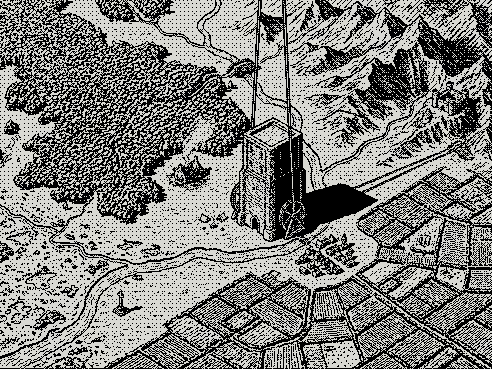

MOCK — not wired. The look only, for review before we build plan 082. Labs experiment floormap: the camp menu of a floor becomes a 1-bit map — gate, camp, fields, keep, and the floor's three places of interest, each carrying a quest. Floor 1, the Fencerows.
Step 1 — the map replaces the menu
HP ▓▓▓▓▓▓▓░░░ 21/30
EN ▓▓▓▓▓▓▓▓▓▓▓▓▓▓▓▓▓▓▓▓▓▓░░ 22/24
XP ▓▓▓░░░░░░░ Lv 3

gold = quest · hover a marker for what the place holds · click to select
Step 2 — the quest sheet (marker 3, the hard one)
The Fair-Day Wyrm
The old fair-green at the valley's heart, its weathered market cross still standing over a ring of empty pitches. A young drake has coiled itself on the cross — nothing gathers here while it does. Raise the fair again and you give the scattered field-folk their one rallying-place back.
- 22 ⚡ paid now. The path itself costs nothing more — every fight on it is 0 ⚡.
- Seven fights stand between the gate and the wyrm. Everything the Fencerows holds walks this path — even the hedge-wight.
- No road to Roothollow. Out here there is no healer, no stew, no shop. Your pack is what you have.
- Turning back is allowed — through the same number of fights you met going out. You can run from them; running has teeth.
- Leave whenever you like. The path holds your place.
- The wyrm is worse than Brackjaw. This is a quest for a climber who has outgrown this floor.
The prize — ◈ 640 · ✦ 320 XP · a tier-2 weapon · a trollblood tonic
Step 3 — mid-quest: the map narrows to the path
Past the drove-bridge
GATE ▓▓▓▓░░░ WYRM
HP ▓▓▓▓▓░░░░░ 14/30
EN ░░░░░░░░░░░░░░░░░░░░░░░░ 0/24 · spent at the gate
▪ Three fights won, one fled — the last pack still trails you.
▪ The healer's tent is a floor away. You carry
1 medgel.
no Roothollow · no Tower Gate · no shops — until you stand at the gate again
Step 4 — the hour away (≥ 60 min idle, one roll, never lethal)
A stranger's blessing
A travelling merchant found your fire. He heard where you were headed, left a whetted edge for the work, and blessed you for going to kill the wyrm. Weapon oil ×3 joined your pack.
The heath mushroom
You found a heath mushroom growing in the hedge-shade and ate it. Your wounds closed while you slept. HP 14 → 30.
The scorpion
Something small found you first. A scorpion's sting burns in your ankle. HP 14 → 9. The hour away stings or gifts — it never kills.